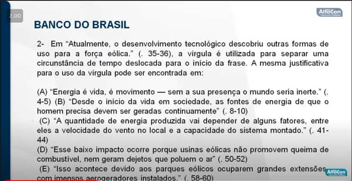

Português - Iniciando
Provas - Questões
Banco do Brasil
Leio e respondo
Questão 01 - C
- Exatamento o que está escrito no texto. - Interpretação de texto é o que você entendeu, sem reecrever
- compreenção textual: É o que está escrito no texto.
Questão 02 - B

- Exatamento o que está escrito no texto.
Questão 03 - D
Exemplos
- Verbo transitivo direto e indireto
Páginas e dicas da cráse e hifen
Hifen, verbo forma verbal
Dicas de hifens
Adoro hifen, sempre que o primeiro elemento é prefixo, terminar por vogal e o segundo elemento iniciar pela mesma vogal - exemplo
- se for primeiro elemento prefixo - vogais diferente, vogais diferente perdem o hifen e se juntam - exemplo - auto-escola perdeu o hifen e agora é autoescola
- Sempre que o prefixo terminar com vogal e o primeiro prefixo iniciar por R ou S, não haverá hifen
Exemplos
- Anti-social -> antissocial
- Mini-saia -> Minissaia
- contra-reforma -> contrarreforma
- Consoantes = consoantes iguais pedem hifen
- Vogais =
- Onde indicar localidade, sul-america, sul-africano
- H ou R não existem H em meio de fapalvra, se iniciou por H hifen já
Acentuação de heroi não é mais acentuada, o que é um verbo?
Questão 05
Posição correta = colocação prominal
nunca = adverbial
Questão 6
Pronome
coesão referencial anaforica - faz referencia anafórico
Referencia de elemento anafórico
Eu encontrei o artur ontem, mas não entreguei a ele os presentes.
- O pronome ele faz referencia a artur antes, deixou de ser pronome.
Questão 7
Resposta C
Porquê:
Porque junto e sem acento, pois (porque)
o porquê vem junto de um artigo (clique aquui e saiba o que é um artigo)